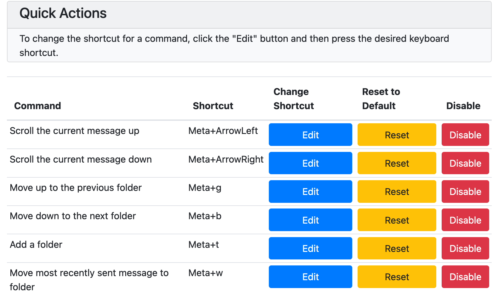
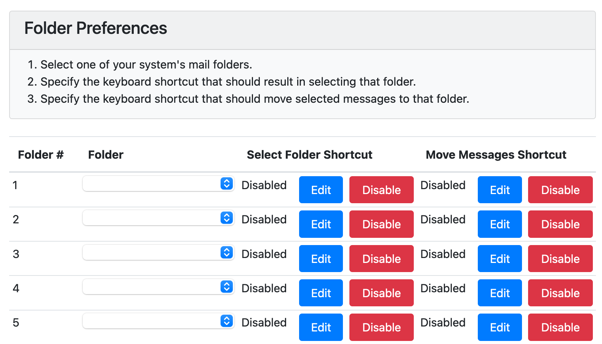
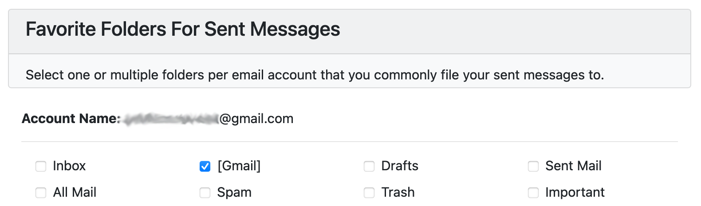

Complete one-time setup on the preferences
page to customize your keyboard shortcuts.

1. Quick Actions
-
This section manages most of
Thunderkey's features.
-
Customize the shortcuts by
clicking "Edit" and entering a
new keyboard combination.
-
You can also disable any
built-in shortcut.
2. Folder Preferences:
-
Choose up to 20 favorite mail
folders.
-
For each folder, set a keyboard
shortcut that will let you jump
to that folder.
-
You can also set shortcuts that
file the selected messages into
those folders.


3. Favorite Folders for Sent
Messages:
-
For each of your accounts,
select favorite folders where
you frequently save sent messages.
-
After you send a message, hit
the shortcut defined above to
file your most recently sent
message into a folder that you
select.